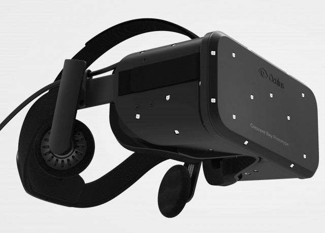

The Matrix is an ever-changing virtual reality simulation that a person can access remotely. For the average citizen it is merely a resort destination with multiple avenues of excitement to satisfy even the most selective of travelers. However for the person who knows program code it can offer worlds of endless possibilities. The ability to code will allow you to shape the virtual world to any image you see fit. Below are just a few of the features available within our virtual paradise.
If you want a chance to escape reality and create your own world this is the ideal vacation spot. Any world you create within The Maxtrix will be saved to our database and you not only will recieve a free copy of the world you made inside the program. If you are adventureous then we offer the chance to explore worlds made by others visitors and even the programmers on staff. For a small monthly fee $10 you will get unlimited access to these worlds that will be automatically be uploaded to your account for you to enjoy and change anything you see fit. For a one-time purchase of $100 you will get the in-home virtual reality-kit packaged in a durable reusable storage unit for easy transport.  It comes with 500gb of space and preloaded base-worlds to edit and the option to create your own from home. This in home virtual-reality kit is linked to your account so anything you have created in The Matrix you will be able to access from the kit and vice-versa.